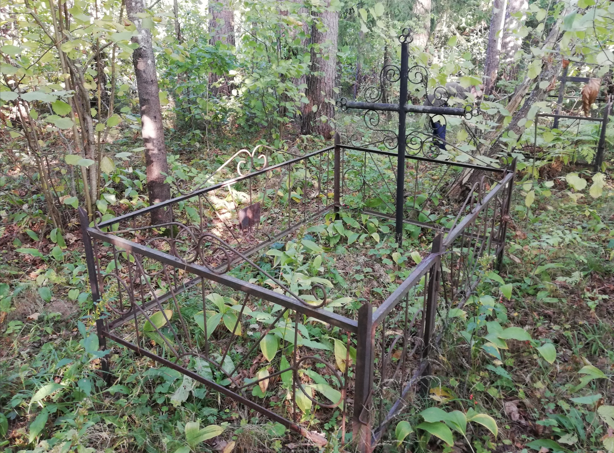
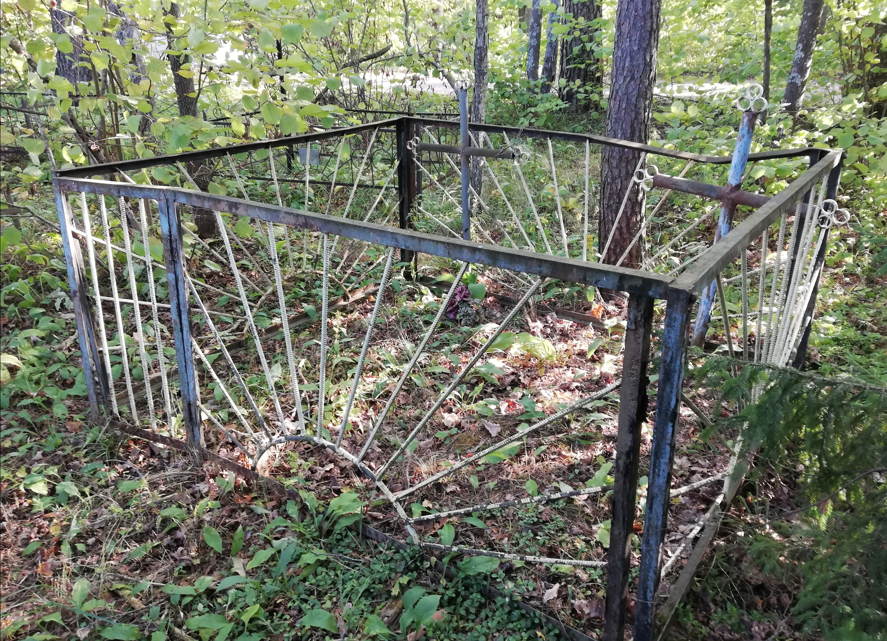
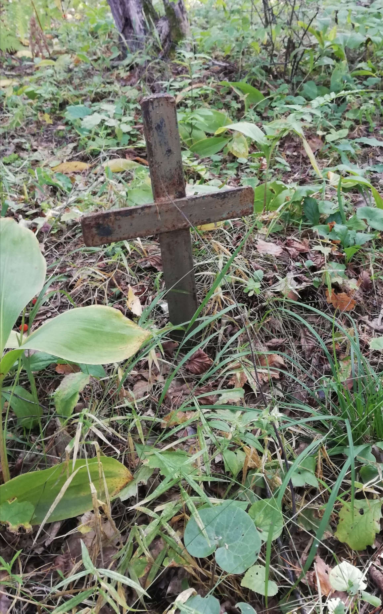
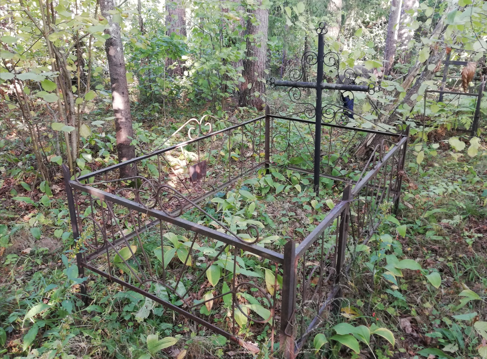
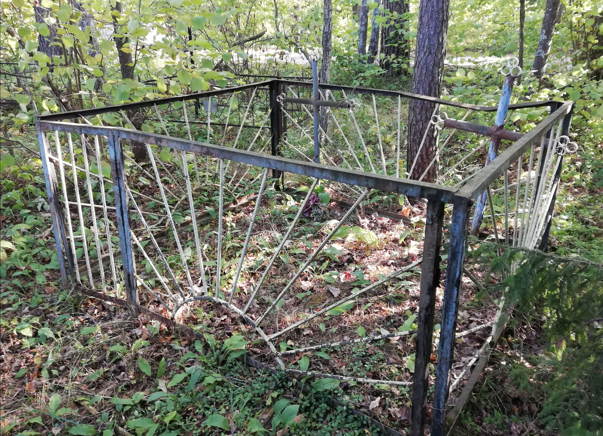
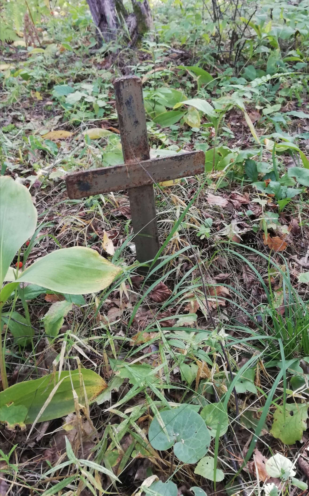
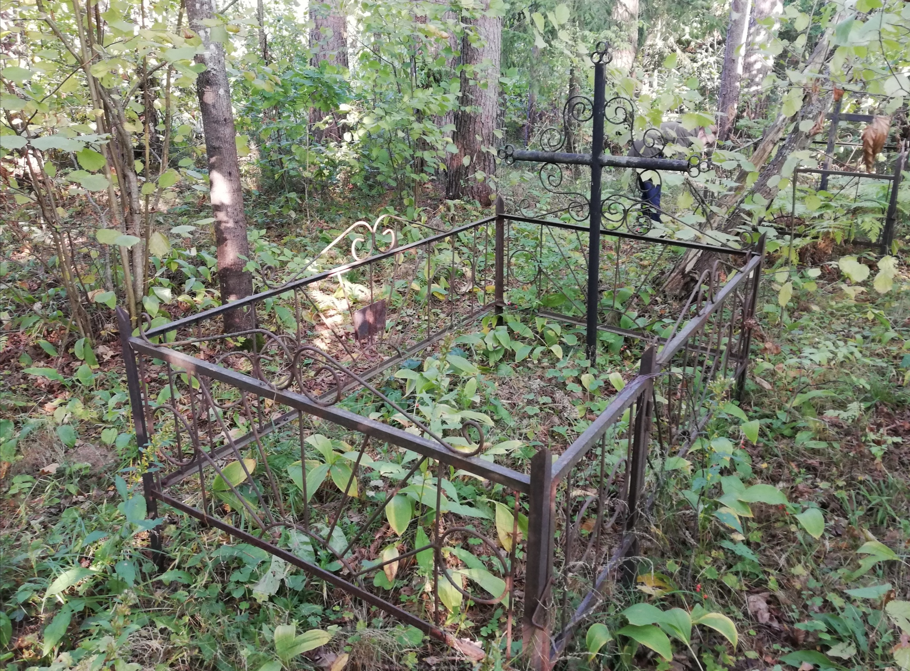
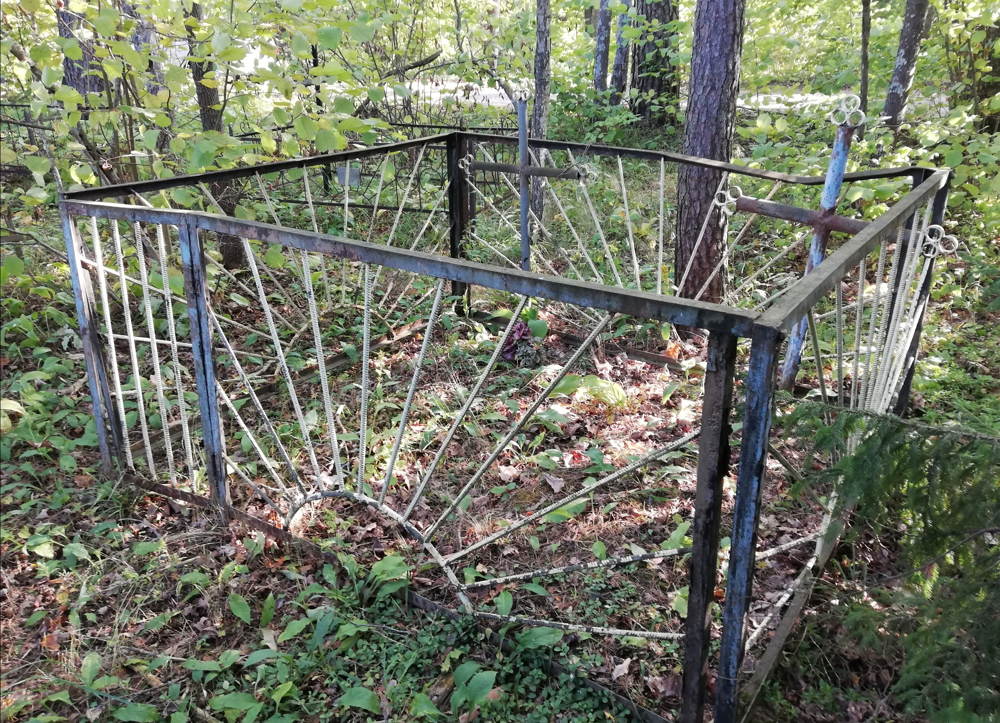
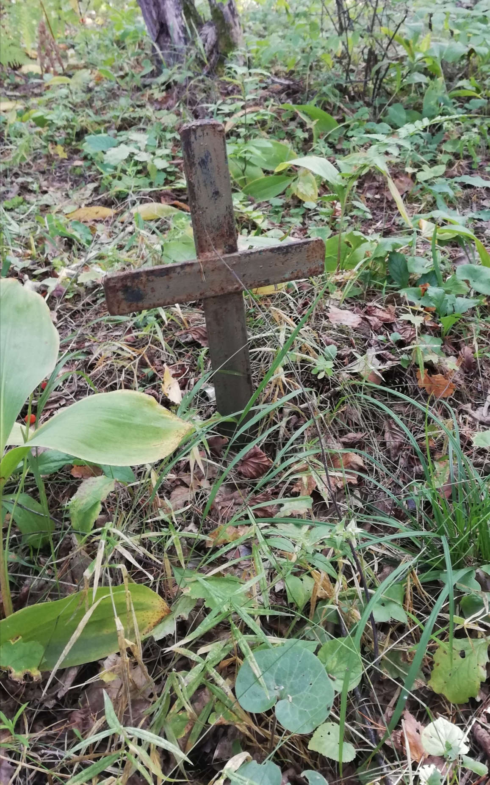

Інфармацыя № 12: Пахаванні памёрлых у ціфозным шпіталі мірных грамадзян
1. Месца і дата пахавання: Рэспубліка Беларусь, Віцебская вобл., Віцебскі раён, в. Якуціна, Лятчанскі с/с
2. Тып пахавання: брацкая магіла
3. Памеры пахавання: Шырыня – 15 м, даўжыня – 20 м
4. Кароткае апісанне пахавання: пахаванні адзначаныя металічнымі крыжамі ў агароджах і ніяк не адзначаныя магілы
5. Колькасць пахаваных: каля 10
6. Персанальныя звесткі: -
7. Дадатковая інфармацыя: У 0,2 км ад аздараўленчага лагера “Лясная паляна”, у 5 м ад дарогі, якая вядзе з лагера ў бок в. Старое Сялоа знаходзяцца каля 10 пахаванняў у выглядзе земляных здзірванелых холмікаў. Адно пахаванне мае металічны крыж, металічную агароджу на якой шыльдачка з тэкстам “Климович Александра Федоровна 1.01.1903–9.08.1943”, другое пахаванне азначана металічным крыжом, мае металічную агароджу з металічнай шыльдачкай з тэкстам: «Климович Николай Григорьевич 11.09. 1938 – 13.09. 1943». Яшчэ адно пахаванне мае металічную агароджу у якім стаяць 2 металічных крыжы. Побач маецца невялікі земляны холмік азначаны невялікім (40 х 40 см) металічным крыжом. Іншыя пахаванні ніяк не азначаны. Праглядаюцца толькі зямельныя наспы парослыя травой. Са слоў Юшкевіч Маргарыты Дзмітрыеўны, у гэтым месцы да 1941 г. быў Дом маці і дзіця, які ў гады вайны стаў шпіталем, дзе ўтрымлівалі хворых на ціф. Тых, хто паміраў хавалі не на грамадзянскіх могілках, а непадалёк ад шпіталя, каля дарогі. Можна лічыць, што людзі, якія памёрлі ад ціфа ў гады вайны з’яўляюцца ахвярамі генацыда беларускага народа.


